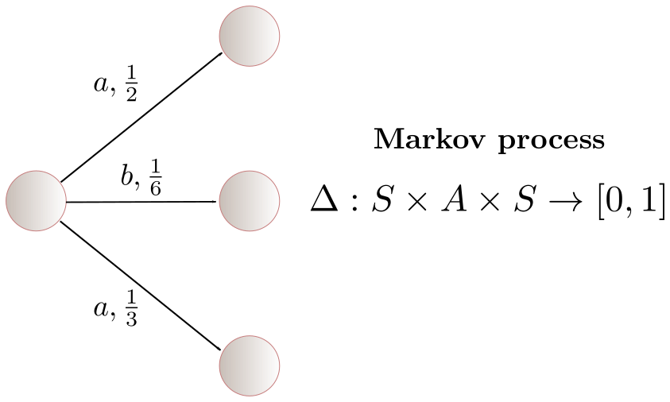
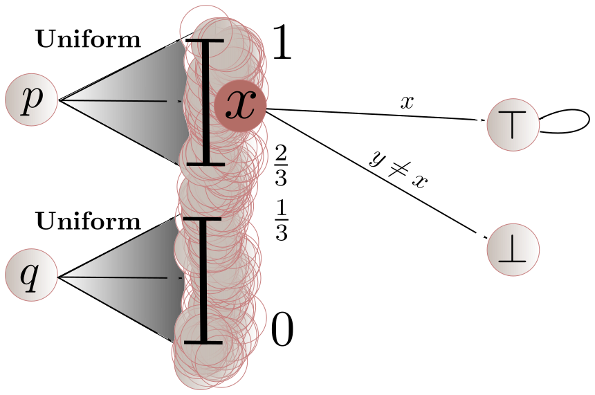

Research Fellow @ Alan Turing Institute of data science, London
CNRS, LaBRI, Bordeaux
Simons Institute, Berkeley, December 12, 2017
Joint work with
Published in ICALP'2017
Van Benthem's theorem
Let $p$ and $q$ be two states in some process
there exists a bisimulation between $p$ and $q$
$\iff$ for all formulas $\phi$, $p \models \phi$ is equivaent to $q \models \phi$
Reasoning with discretetime and space

$\Delta(q,a,p)$ is the probability to go to $p$ from $q$ under action $a$
Reasoning with discrete time and continuous space
$\Delta(q,a,C)$ is the probability to go to $C \in \Sigma$ from $q$ under action $a$
Probabilistic bisimulation
Test-of-time award LICS 2017
Let $\equiv\ \subseteq S \times S$ be an equivalence relation
Intuition: $\equiv$ is a bisimulation iff the quotient of $\mathcal{M}$ by $\equiv$ is well defined.
$C \in \Sigma$ is closed under $\equiv$ if: $p \in C$ and $p \equiv q$ imply $q \in C$
$\equiv$ is a bisimulation if:
if $p \equiv q$, then for all $a$ in $A$, for all $C \in \Sigma$ closed under $\equiv$,
$$\Delta(p,a,C) = \Delta(q,a,C)$$
$p$ and $q$ are bisimilar if there exists a bisimulation $\equiv$ such that $p \equiv q$
Game
Duplicator claims that $p \equiv q$
Spoiler: pick $a$ in $A$ and $C \in \Sigma$ such that $\Delta(p,a,C) \neq \Delta(q,a,C)$
Duplicator: $p'$ in $C$, $q'$ not in $C$ and claim that $p' \equiv q'$
Fact: $p$ and $q$ are bisimilar if Duplicator can play forever
Theorems (Larsen & Skou 89, Desharnais et al,...):
The state space is an analytic space and the set of actions is countable.
Two states are bisimiliar if, and only if, they satisfy the same formulas of the modal logic (only conjunctions)
A state simulates another if, and only if, it satisfies more formulas of the modal logic (conjunctions and disjunctions)
Beyond countable set of labels

$p$ and $q$ are NOT bisimilar, unless we restrict to countably many labels!
Reducing to a topological question
The crucial point is to understand the structure of countably generated $\sigma$-algebras in $(S,\Sigma)$,
which the unique structure theorem of analytic spaces nicely describes.
Æsthetics
We gave æsthetically pleasinguniform proofs for bisimulation and simulation using the topology of analytic spaces.
Definition:
$\equiv$ is a bisimulation if:
if $p \equiv q$, then for all $a$ in $A$, for all $C \in \Sigma$ closed under $\equiv$,
$$\Delta(p,a,C) = \Delta(q,a,C)$$
and
$$\rho(p) = \rho(q)$$
This amounts to treat $\rho$ as additional labels to distinguish states.
Problem
Arguably, $p$ and $q$ should be bisimilar!
Solution
Accumulate time!
Given a semi-Markov process $\mathcal{M} = (S,\Delta,\rho)$,
define the Markov process $\mathcal{M}' = (S \times \mathbb{R}_{\ge 0}, \Delta')$ such that:
for $C \in \Sigma_{\text{state}}$ and $I \in \Sigma_{\text{time}}$,
$$\Delta'((s,t),\ a,\ C \times I) = \Delta(s,\ a,\ C) \cdot \rho(s, I - t)$$
Deriving bisimulation
Definition:
$\equiv\ \subseteq (S \times \mathbb{R}_{\ge 0}) \times (S \times \mathbb{R}_{\ge 0})$ is a bisimulation if:
if $p,t \equiv q,t'$, then for all $a$ in $A$, for all $C \in \Sigma_{\text{state}}$ and $I \in \Sigma_{\text{time}}$
such that $C \times I$ is closed under $\equiv$,
$$\Delta(p,\ a,\ C) \cdot \rho(p,\ I - t) = \Delta(q,\ a,\ C) \cdot \rho(q,\ I - t')$$
Modal logic inherited
\[
\phi\ =\ \top\ \mid\ \phi \wedge \phi\ \mid\ \langle a \rangle_{> p} \phi\
\]
Definition:
$$q,t \models \langle a \rangle_{> p} \phi\ \text{ if }\ \Delta(q,\ a, [\phi]) > p,$$
where
$$[\phi] = \{ (p,u) \in S \times \mathbb{R}_{\ge 0} \mid (p,u) \models \phi \}$$
Results for free
Theorem:
The state space is an analytic space and the set of actions is countable.
Two states are bisimiliar if, and only if, they satisfy the same formulas of the modal logic (only conjunctions)
A state simulates another if, and only if, it satisfies more formulas of the modal logic (conjunctions and disjunctions)
Research directions
efficient algorithms for (bi)simulation checking of semi-Markov processes
trace-based semantics and metrics for semi-Markov processes
duality principle: construct an algorithm such that
if $p$ and $q$ are bisimilar, output a bisimilation, otherwise a distinguishing formula

 $\Delta(q,a,C)$ is the probability to go to $C \in \Sigma$ from $q$ under action $a$
$\Delta(q,a,C)$ is the probability to go to $C \in \Sigma$ from $q$ under action $a$